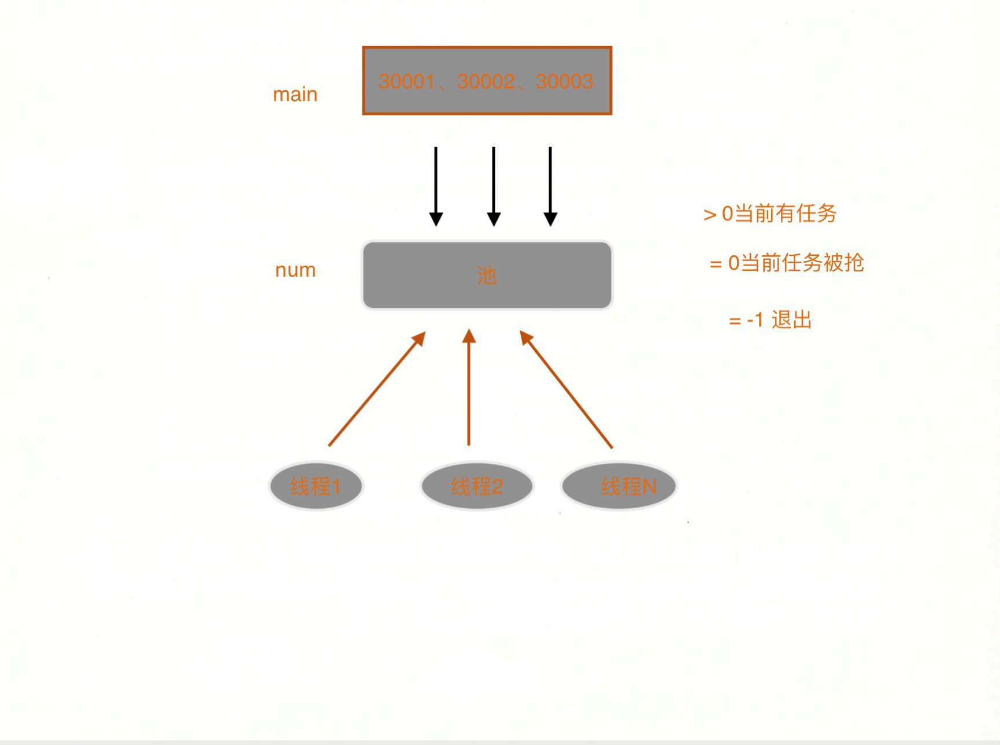

线程
实际项目中多线程用得比较多，因为多线程是先有标准后有实现的，所以不会向多进程那样在不同平台上有许多不同的情况。
线程的概念
线程的创建、线程终止、 线程的取消、线程的清理
线程的同步（互斥量， 通知法，读写锁）
线程相关的属性 （线程同步属性）
重入，线程和信号的关系， 线程与fork
1.1 线程概念
线程就是一个正在运行函数
一个进程空间最少要有一个线程，一个进程里面最少有一个函数在运行。
线程没有主次之分，不分前后的，即使线程自己创建出来的线程反过来把自己取消或者收尸都是可以的。main函数产生的main进程并不是主线程
线程之间独立运行，而不是调用与被调用的关系。多个线程的内存是共享的。所以线程间通信依赖全局变量
线程是先有标准，然后才有标准实现的
一个新的库被开发出来，默认是需要支持多线程的，如果不能支持需要在函数的调用以及函数名上做说明。很多函数都是支持多线程的，比如getchar putchar等
1.1.1 线程有不同的标准
线程标准只是一套标准，而不是实现
POSIX标准
openmp标准
1.1.2 线程的标识 pthread_t (p 表示 POSIX, thread 线程)·
pthread_t类型 是 POSIX 下的线程标识， pthread_t是什么类型，不清楚，正因为 POSIX 是一套标准而不是实现，所以 POSIX 只是规定了 pthread_t 作为线程标识符，但是并没有规定它必须是由什么类型组成的，所以在有的平台上它可能是 int，有些平台上它可能是 struct，还有些平台上它可能是 union，所以不要直接操作这个类型，而是要使用 POSIX 规定的各种线程函数来操作它。
有木有觉得像标准 IO 里 FILE 的赶脚？没错，标准制定出来的很多东西都是这种风格的，它为你提供一个数据类型而不让你直接对这个类型操作，要通过它定义的一系列函数来实现对这个类型的操作，这样就在各个平台上实现统一的接口了，所以这样做才能让标准制定出来的东西具有较好的可移植性。
pthread_t 是个很重要的东西，我们所有使用 PSOIX 标准的线程操作都是围绕着它来进行的，通过它配合各种函数就可以对线程进行各种花样作死的玩了。
1 2 3 4 5 6 7 8 9 10 11 $ ps ax -L PID LWP TTY STAT TIME COMMAND 1 1 ? Ss 0:02 /sbin/init 2 2 ? S 0:00 [kthreadd] 3 3 ? S 0:00 [ksoftirqd/0] 877 877 ? Ss 0:06 dbus-daemon --system --fork 948 948 ? Ssl 0:00 /usr/sbin/ModemManager 948 965 ? Ssl 0:00 /usr/sbin/ModemManager 948 975 ? Ssl 0:00 /usr/sbin/ModemManager 956 956 ? Ss 0:00 /usr/sbin/bluetoothd $
PID 是进程号。 LWP虚拟进程ID，即线程 ID。
在linux环境下，其实是以线程来消耗当前进程号的。当前所看到的线程号其实就是用进程标识来进行描述的。 尽管如此 依然不能 printf("%d", pthread_t), 因为其他线程标准下的 pthread_t 并不一定是 int类型。
这里看到的 PID 为 948 的进程有三个 LWP，它们就是三个线程。
1.1.3 多线程相比信号要简单不少
多线程太规范了，信号处理函数应该越短越好。里面不能用IO，不能用不可重入的函数。只能安全的在里面做一些计算和系统调用。其他都慎用。线程不存在这样的问题。线程里面可以io，也可以使用可重用和不可重用的函数。要做到线程的安全比做到信号的安全 条件要松散一些。具体原因还是 多线程是先有标准 后有实现。更像亲儿子。同样是解决异步的两种方式，多线程和信号。至少要对其中一种方式掌握的很熟练。
1 2 3 4 $> vim makefile CFLAGS+=-pthread LDFLAGS+=-pthread
pthread_equal(3)
1 2 3 4 #include <pthread.h> int pthread_equal (pthread_t t1, pthread_t t2)
第一个要介绍的函数是 pthread_equal(3)，比较两个线程标识符是否相同。为什么不能使用 if (t1 == t2) 的方式比较两个线程标识符呢？就像我们上面说的，因为你不知道 pthread_t 是什么类型的，所以永远不要自己直接操作它。
pthread_self(3)
1 2 3 4 5 6 7 #include <pthread.h> pthread_t pthread_self (void )
大家还记得一个进程可以通过 getpid(2) 函数获得当前进程的 ID 号吧？pthread_self(3) 就是获得当前线程 ID 的函数。
1.2 线程操作 1.2.1 线程的创建 pthread_create(3)
1 2 3 4 5 #include <pthread.h> int pthread_create (pthread_t *thread, const pthread_attr_t *attr, void *(*start_routine) (void *), void *arg)
pthread_create(3) 函数的作用就是创建一个新线程。
参数列表：
thread：由函数回填的线程标识符，它来唯一的标识产生的新线程，后面我们只要需要操作新线程就需要用到它；
attr：线程属性，在本篇博文（第 11 章）中，所有的属性都是使用 NULL，也就是使用默认属性。
start_routine：线程的执行函数；入参是 void，返回值是 void ，恭喜你，这两个值的类型都是百搭的，任何类型你都可以在这使用了。
arg：传递给 start_routine 的 void* 参数。
返回值：成功返回 0；失败返回 errno。
新线程和当前的线程是两个兄弟线程，他们是平等的，没有父子关系。
新线程被创建之后，这两个线程哪个先执行是不确定的，由调度器来决定。如果你希望哪个线程一定先执行，那么就在其它线程中使用类似 sleep(3) 的函数让它们等一会儿再运行。
1 2 3 4 5 6 7 8 9 10 11 12 13 14 15 16 17 18 19 20 21 22 23 24 25 26 27 #include <pthread.h> static void *func (void *p) puts ("Thread is working!" ); return NULL ; } int main () int error; pthread_t tid; puts ("Begin!" ); error = pthread_create(&tid, NULL ,func, NULL ); if (error) { fprintf (stderr , "pthread_create():%s\n" , strerror(error)); exit (1 ); } puts ("End!" ); exit (0 ); }
为何没有打印 “Thread is working!”
线程的调度取决于调度器的策略,这个现象也不难理解，因为在虚拟机的环境上，没办法去模拟一个多核并发的内容。因为虚拟机本身在宿主机上跑的，一定是在一个核上运行。所以单个核上无法虚拟出多个核。
回过头看代码，
1 2 3 4 5 6 7 8 9 10 11 12 13 14 15 16 17 18 int main () int error; pthread_t tid; puts ("Begin!" ); error = pthread_create(&tid, NULL ,func, NULL ); if (error) { fprintf (stderr , "pthread_create():%s\n" , strerror(error)); exit (1 ); } puts ("End!" ); exit (0 ); }
在一个多核机器上，理论是可以打印出 “new pthread working!” 的，有时存在 begin 和 end之间，有时存在 end之后
1.2.2 线程的终止
线程的终止有三种方式
线程从启动例程返回，返回值就是线程的退出码
线程可以被同一进程中的其他线程取消（异常终止的一种方式）
线程调用 pthread_exit() 函数，
pthread_exit(3)
这个函数相当于进程阶段的 exit 函数，它表示结束当前正在跑的线程（函数），当然如果你 用 pthread_exit 调用的线程是当前进程的最后一个正在跑的线程，那么进程也会被结束。
1 2 3 4 5 #include <pthread.h> void pthread_exit (void *retval)
在线程执行函数中调用，作用是退出当前线程，并将返回值通过 retval 参数返回给调用 pthread_join(3) 函数的地方，如果不需要返回值可以传入 NULL。
pthread_join(3) 是为线程收尸的函数，我们会在下面详细介绍。
1 2 3 4 int pthread_join (pthread_t thread, void **retval)
为线程收尸，在上面的栗子中大家已经见到了。不像 wait(2) 函数，线程之间谁都可以为别人收尸，它们之间是没有父子关系的。而 wait(2) 函数只能是由父进程对子进程收尸。
参数列表：
thread：指定为哪个线程收尸；
retval：这个二级指针是什么呢？它就是线程在退出的时候的返回值（pthread_exit(3) 的参数），它会把线程的返回值的地址回填到这个参数中。
我们先来看个小栗子，直观的了解下线程是如何被创建的，以及它是如何工作的。
1 2 3 4 5 6 7 8 9 10 11 12 13 14 15 16 17 18 19 20 21 22 23 24 25 26 27 28 29 30 31 32 33 34 35 36 37 38 #include <stdio.h> #include <stdlib.h> #include <pthread.h> #include <string.h> #include <unistd.h> static void *func (void *p) puts ("Thread is working." ); sleep(10 ); pthread_exit(NULL ); } int main () pthread_t tid; int err; puts ("Begin!" ); err = pthread_create(&tid,NULL ,func,NULL ); if (err) { fprintf (stderr ,"pthread_create():%s\n" ,strerror(err)); exit (1 ); } pthread_join(tid,NULL ); puts ("End!" ); exit (0 ); }
编译并运行，同时使用 LZ 上面介绍过的 ps(1) 命令验证线程是否被创建成功了。
1 2 3 4 5 6 7 8 9 10 11 $ ./create Begin! Thread is working. End! $ $ ps ax -L PID LWP TTY STAT TIME COMMAND 4354 4354 pts/1 Sl+ 0:00 ./create 4354 4355 pts/1 Sl+ 0:00 ./create $
通过 ps(1) 命令的验证，可以看到这两个线程拥有同一个 PID 不同的 LWP，所以可以直观的看出来我们的线程创建成功了！
大家注意，编译 POSIX 线程程序的时候需要使用 -pthread 参数，这个其实在 man 手册里已经说得很清楚了.
1.2.3 线程的清理 pthread_cleanup_push()pthread_cheanup_pop()
7.线程清理处理程序（thread cleanup handler）
1 2 3 4 5 6 7 8 #include <pthread.h> void pthread_cleanup_push (void (*routine)(void *), void *arg) void pthread_cleanup_pop (int execute)
就像在进程级别使用 atexit(3) 函数挂钩子函数一样，线程可能也需要在结束时执行一些清理工作，这时候就需要派出线程清理处理程序上场了。钩子函数的调用顺序也是逆序的，也就是执行顺序与注册顺序相反。
这两个是带参的宏而不是函数，所以必须成对使用，而且必须先使用 pthread_cleanup_push 再使用 pthread_cleanup_pop，否则会报语法错误，括号不匹配。
参数列表：
routine：钩子函数。
arg：传递给钩子函数的参数。
execute：0 不调用该钩子函数；1 调用该钩子函数。
pthread_cleanup_pop 写到哪都行，只要写了让语法不报错就行，就算你把它写到 pthread_exit(3) 下面也没问题，但是 execute 参数就看不到了，所以无论 pthread_cleanup_pop 的参数是什么，所有注册过的钩子函数都会被执行。
1 2 3 4 5 6 7 8 9 10 #include <pthread.h> void routine (void *p) void * fun (void *p) pthread_cleanup_push(routine, NULL ); pthread_cleanup_pop(1 ); }
预编译，查看宏替换的结果：
1 2 3 4 5 6 7 8 9 $ gcc -E cleanup.c void routine (void *p) {} void* fun (void *p) { do { __pthread_unwind_buf_t __cancel_buf; void (*__cancel_routine) (void *) = (routine); void *__cancel_arg = (((void *)0)); int not_first_call = __sigsetjmp ((struct __jmp_buf_tag *) (void *) __cancel_buf.__cancel_jmp_buf, 0); if (__builtin_expect (not_first_call, 0)) { __cancel_routine (__cancel_arg); __pthread_unwind_next (&__cancel_buf); } __pthread_register_cancel (&__cancel_buf); do {; // 这里是其它代码 do { } while (0); } while (0); __pthread_unregister_cancel (&__cancel_buf); if (1) __cancel_routine (__cancel_arg); } while (0); }
通过预编译可以看出来 pthread_cleanup_push 和 pthread_cleanup_pop 两个宏被替换了，并且每个宏仅定义了一半，如果不成对写另一个宏编译的时候就会报括号不匹配的错误。
1 2 3 4 5 6 7 8 9 10 11 12 13 14 15 16 17 18 19 20 21 22 23 24 25 26 27 28 29 30 31 32 33 34 35 36 37 38 static void cleanup_func (void *p) puts (p); } static void *func (void *p) puts ("Thread is working" ); pthread_cleanup_push(cleanup_func, "cleanup:1" ); pthread_cleanup_push(cleanup_func, "cleanup:2" ); pthread_cleanup_push(cleanup_func, "cleanup:3" ); puts ("push over!" ); pthread_cleanup_pop(1 ); pthread_cleanup_pop(1 ); pthread_cleanup_pop(1 ); pthread_exit(NULL ); } int main () int err; pthread_t tid; puts ("begin" ); err = pthread_create(&tid, NULL , func, NULL ); if (err) { fprintf (stderr ,"pthread_create(): %s\n" , strerror(err)); exit (1 ); } pthread_join(tid, NULL ); puts ("End!" ); exit (0 ); }
1 2 3 4 5 6 7 begin Thread is working push over! cleanup:3 cleanup:2 cleanup:1 End!
1.2.4 线程取消
linux 一共有8种终止进程的方式，其中5种正常终止和3种异常终止。 其中‘最后一个线程对取消请求作出响应；’ 是三种异常中止方式中的一种
pthread_cancel(3)
1 2 3 4 5 #include <pthread.h> int pthread_cancel (pthread_t thread)
setcanceltype
1 2 3 int pthread_setcancelstate (int state, int *oldstate) int pthread_setcanceltype (int type, int *oldtype) void pthread_testcancel (void )
取消有两种状态： 允许 和 不允许
允许取消又分为 异步cancel 和 推迟 cancel(默认) -> 推迟至cancel点再响应
pthread_cancel(3) 函数的作用是取消同一个进程中的其它线程线程。
为什么要取消线程呢？当一个线程没有必要继续执行下去时，我们又没法为它收尸，所以就需要先取消这个线程，然后再为它收尸。
比如在使用多线程遍历一个很大的二叉树查找一个数据时，其中某一个线程找到了要查找的数据，那么其它线程就没有必要继续执行了，所以就可以取消它们了。
注意 pthread_cancel(3) 并不等待线程终止，它仅仅提出请求。
而线程收到这个请求也不会立即终止，线程要执行到取消点才能被取消，关于取消点在下一篇博文中会介绍。
线程分离
pthread_detach(3)
不想管它，扔到一边去，生死存亡各有天命
1 2 3 4 5 6 #include <pthread.h> int pthread_detach (pthread_t thread)
pthread_detach(3) 函数用于分离线程，被分离的线程是不能被收尸的。
primer
1 2 3 4 5 6 7 8 9 10 11 12 13 14 15 16 17 18 19 20 21 22 23 24 25 26 27 28 29 30 31 32 33 34 35 36 37 38 39 40 41 42 43 44 45 46 47 48 49 50 #include <stdio.h> #include <stdlib.h> #include <unistd.h> #include <pthread.h> #define LEFT 30000000 #define RIGHT 30000200 #define THRNUM (RIGHT-LEFT+1) static void *thr_prime (void *p) int main () int i, err; pthread_t tid[THRNUM]; for (i = LEFT; i<= RIGHT; i++) { err = pthread_create(tid+(i-LEFT), NULL , thr_prime, &i); if (err) { fprintf (stderr , "pthread_create(): %s\n" , strerror(err)); exit (1 ); } } for (i = LEFT; i<=RIGHT; i++) pthread_join(tid[i-LEFT], NULL ); exit (0 ); } static void *thr_prime (void *p) int i, j, mark; i = *(int *)p; mark = 1 ; for (j=2 ;j<i/2 ;j++) { if (i%j==0 ) { mark = 0 ; break ; } } if (mark) printf ("%d is a primer\n" , i); pthread_exit(NULL ); }
1 2 3 4 5 6 7 8 9 10 ./primer 30000023 is a primer 30000037 is a primer 30000037 is a primer 30000049 is a primer 30000071 is a primer 30000059 is a primer 30000079 is a primer 30000133 is a primer
这种现象是因为线程发生了竞争；
1 2 3 4 5 6 7 8 9 10 11 12 13 14 15 16 17 18 19 20 21 22 23 24 25 26 27 28 29 30 31 32 33 34 35 36 37 38 39 40 41 42 43 44 45 46 #include <stdio.h> #include <stdlib.h> #include <unistd.h> #include <pthread.h> #define LEFT 30000000 #define RIGHT 30000200 #define THRNUM (RIGHT-LEFT+1) static void *thr_prime (void *p) int main () int i, err; pthread_t tid[THRNUM]; for (i = LEFT; i<= RIGHT; i++) { err = pthread_create(tid+(i-LEFT), NULL , thr_prime, (void *)i); if (err) { fprintf (stderr , "pthread_create(): %s\n" , strerror(err)); exit (1 ); } } for (i = LEFT; i<=RIGHT; i++) pthread_join(tid[i-LEFT], NULL ); exit (0 ); } static void *thr_prime (void *p) int i, j, mark; i = (int )p; mark = 1 ; for (j=2 ;j<i/2 ;j++) { if (i%j==0 ) { mark = 0 ; break ; } } if (mark) printf ("%d is a primer\n" , i); pthread_exit(NULL ); }
1 2 3 4 5 6 7 8 9 10 11 12 13 14 15 16 17 18 19 20 21 30000149 is a primer 30000137 is a primer 30000041 is a primer 30000079 is a primer 30000083 is a primer 30000169 is a primer 30000163 is a primer 30000133 is a primer 30000023 is a primer 30000071 is a primer 30000167 is a primer 30000109 is a primer 30000001 is a primer 30000049 is a primer 30000037 is a primer 30000199 is a primer 30000193 is a primer 30000059 is a primer $ ./primer0 | wc -l 18
1 2 3 4 5 6 7 8 9 10 11 12 13 14 15 16 17 18 19 20 21 22 23 24 25 26 27 28 29 30 31 32 33 34 35 36 37 38 39 40 41 42 43 44 45 46 47 #include <stdio.h> #include <stdlib.h> #include <unistd.h> #include <pthread.h> #define LEFT 30000000 #define RIGHT 30000200 #define THRNUM (RIGHT-LEFT+1) static void *thr_prime (void *p) int main () int i, err; pthread_t tid[THRNUM]; for (i = LEFT; i<= RIGHT; i++) { err = pthread_create(tid+(i-LEFT), NULL , thr_prime, (void *)i); if (err) { fprintf (stderr , "pthread_create(): %s\n" , strerror(err)); exit (1 ); } } for (i = LEFT; i<=RIGHT; i++) pthread_join(tid[i-LEFT], NULL ); exit (0 ); } static void *thr_prime (void *p) int i, j, mark; i = (int )p; mark = 1 ; for (j=2 ;j<i/2 ;j++) { if (i%j==0 ) { mark = 0 ; break ; } } if (mark) printf ("%d is a primer\n" , i); pthread_exit(NULL ); }
1 2 3 4 5 6 7 8 9 10 11 12 13 14 15 16 17 18 19 20 21 22 23 24 25 26 27 28 29 30 31 32 33 34 35 36 37 38 39 40 41 42 43 44 45 46 47 48 49 50 51 52 53 54 55 56 57 58 59 60 61 62 63 64 65 66 67 68 69 #include <stdio.h> #include <stdlib.h> #include <unistd.h> #include <pthread.h> #define LEFT 30000000 #define RIGHT 30000200 #define THRNUM (RIGHT-LEFT+1) struct thr_arg_st { int n; }; static void *thr_prime (void *p) int main () int i, err; pthread_t tid[THRNUM]; struct thr_arg_st *p ; for (i = LEFT; i<= RIGHT; i++) { p = malloc (sizeof (*p)); if (p == NULL ) { perror("malloc()" ); exit (1 ); } p->n = i; err = pthread_create(tid+(i-LEFT), NULL , thr_prime,p); if (err) { fprintf (stderr , "pthread_create(): %s\n" , strerror(err)); exit (1 ); } } for (i = LEFT; i<=RIGHT; i++) pthread_join(tid[i-LEFT], NULL ); exit (0 ); } static void *thr_prime (void *p) int i, j, mark; i = ((struct thr_arg_st *)p) ->n; free (p); mark = 1 ; for (j=2 ;j<i/2 ;j++) { if (i%j==0 ) { mark = 0 ; break ; } } if (mark) printf ("%d is a primer\n" , i); pthread_exit(NULL ); }
1 2 3 4 5 6 7 8 9 10 11 12 13 14 15 16 17 18 19 20 21 22 23 24 25 26 27 28 29 30 31 32 33 34 35 36 37 38 39 40 41 42 43 44 45 46 47 48 49 50 51 52 53 54 55 56 57 58 59 60 61 62 63 64 65 66 67 68 #include <stdio.h> #include <stdlib.h> #include <unistd.h> #include <pthread.h> #define LEFT 30000000 #define RIGHT 30000200 #define THRNUM (RIGHT-LEFT+1) struct thr_arg_st { int n; }; static void *thr_prime (void *p) int main () int i, err; pthread_t tid[THRNUM]; struct thr_arg_st *p ; void *ptr; for (i = LEFT; i<= RIGHT; i++) { p = malloc (sizeof (*p)); if (p == NULL ) { perror("malloc()" ); exit (1 ); } p->n = i; err = pthread_create(tid+(i-LEFT), NULL , thr_prime,p); if (err) { fprintf (stderr , "pthread_create(): %s\n" , strerror(err)); exit (1 ); } } for (i = LEFT; i<=RIGHT; i++) { pthread_join(tid[i-LEFT], &ptr); free (ptr); } exit (0 ); } static void *thr_prime (void *p) int i, j, mark; i = ((struct thr_arg_st *)p) ->n; mark = 1 ; for (j=2 ;j<i/2 ;j++) { if (i%j==0 ) { mark = 0 ; break ; } } if (mark) printf ("%d is a primer\n" , i); pthread_exit(p); }
一个进程能创建多少线程
32位的机器，一个进程最多创建300个左右的线程
thr_prime这个函数，该函数实际被扔出去201次，201份同时跑。在资源的使用上，他们的代码段是公用的，它们的栈是独立的。
1 2 $> ulimit -a stack size 10240
c程序地址空间分布，32位环境上，c进程的虚拟空间是4GB，最高的一GB是给内核态使用的，用户态用的虚拟空间是不足3GB的。在这不足3GB的空间里面，代码段，静态区域，数据段，堆，栈都得预留出来。所以说，当前能创建多少个线程，也就要看在当前的进程空间里面能够创建多少个10MB大小的栈。所以能创建多少线程还是取决于资源量的
在64位的机器上，一个C程序的虚拟空间是128T。所以，是消耗不完的，纵使能消耗完，也是先消耗完pid号
1.3 线程的同步 在介绍互斥量之前我们先思考一个问题：如何让 20 个线程同时从一个文件中读取数字，累加 1 然后再写入回去，并且保证程序运行之后文件中的数值比运行程序之前大 20？
1 2 $> echo 100 > /tmp/out/ cat /tmp/out
1 2 3 4 5 6 7 8 9 10 11 12 13 14 15 16 17 18 19 20 21 22 23 24 25 26 27 28 29 30 31 32 33 34 35 36 37 38 39 40 41 42 43 44 #include <stdio.h> #include <stdlib.h> #include <pthread.h> #define THRNUM 20 #define FNAME "/tmp/out" #define LINESIZE 1024 static void * thr_add (void *p) FILE *fp; char linebuf[LINESIZE]; fp = fopen(FNAME, "r+" ); if (fp == NULL ) { perror("fopen()" ); exit (1 ); } fgets(linebuf,LINESIZE,fp); fseek(fp, 0 , SEEK_SET); fprintf (fp,"%d\n" , atoi(linebuf)+1 ); fclose(fp); pthread_exit(NULL ); } int main () int i,err; pthread_t tid[THRNUM]; for (i=0 ;i<THRNUM;i++) { err = pthread_create(tid+i, NULL , thr_add, NULL ); if (err) { fprintf (stderr , "pthread_create(): %s\n" ,strerror(err)); exit (1 ); } }; for (i=0 ; i<THRNUM; i++) { pthread_join(tid[i], NULL ); } exit (0 ); }
我们发现，在虚拟机上是正确的，因为虚拟机是运行在一个核上面的。没办法做到并行
1.3.1 互斥量 pthead_mutex_t
限制一段代码以独占的形势在实现
互斥量是一种机制
多线程就是为了充分利用硬件资源，使程序可以并发的运行，但是只要是并发就会遇到竞争的问题，互斥量就是解决竞争的多种手段之一。
程序中每一个线程都要做：读取文件 — 累加 1 — 写入文件 的动作，如果 20 个线程同时做这件事，那么就很有可能多个线程读到的数据是相同的，这样累加的结果也就是相同的了，就没办法保证 20 个线程每个人读到的数据都是独一无二的了。
怎么样才能让 20 个线程读到独一无二的数值呢？很简单，让 读取文件 — 累加 1 — 写入文件 的这个动作同一时刻只能有一个线程来做，这样每个线程读取到的数值都是上一个线程写入的数值了。那么 读取文件 — 累加 1 — 写入文件 这段代码（也就是发生竞争的这段区域）就叫做“临界区”。
互斥量正如它的名字描述的一般，可以使各个线程实现互斥的效果。由它来保护临界区每次只能由一个线程进入，当一个线程想要进入临界区之前需要先抢锁（加锁），如果能抢到锁就进入临界区工作，并且要在离开的时候解锁以便让其它线程可以抢到锁进入临界区；如果没有抢到锁则进入阻塞状态等待锁被释放然后再抢锁。
要在进入临界区之前加锁，在退出临界区的时候解锁。
与 ptread_t 一样，互斥量也使用一种数据类型来表示，它使用 pthread_mutex_t 类型来表示。
初始化互斥量有两种方式：
1）用宏初始化：如同使用默认属性；
2）使用 pthread_mutex_init(3) 函数初始化，可以为互斥量指定属性。
pthread_mutex_t 使用完成之后需要使用 pthread_mutex_destroy(3) 函数销毁，否则会导致内存泄漏。
一般什么情况使用宏初始化，什么情况使用函数初始化互斥量呢？请看下面的伪代码：
前面说了，要在进入临界区之前加锁，在退出临界区的时候解锁。我们来了解一下加锁和解锁的函数。
1 2 int pthread_mutex_init (pthread_mutex_t *restrict mutex, const pthread_mutexattr * restrict attr) pthread_mutex_t mutex = PTHREAD_MUTEX_INITIALIZER;
1 pthread_mutex_destroy();
1 2 3 4 5 6 7 #include <pthread.h> int pthread_mutex_lock (pthread_mutex_t *mutex) int pthread_mutex_trylock (pthread_mutex_t *mutex) int pthread_mutex_unlock (pthread_mutex_t *mutex)
_lock() 是阻塞加锁，当抢锁的时候被抢不到就死等，直到别人通过 _unlock() 把这把锁解锁再抢。
_trylock() 是尝试加锁，无论能否抢到锁都返回。
临界区是每个线程要单独执行的，所以临界区中的代码执行时间越短越好。
1 2 3 4 5 6 7 8 9 10 11 12 13 14 15 16 17 18 19 20 21 22 23 24 25 26 27 28 29 30 31 32 33 34 35 36 37 38 39 40 41 42 43 44 45 46 47 48 49 50 51 52 53 #include <stdio.h> #include <stdlib.h> #include <pthread.h> #define THRNUM 20 #define FNAME "./p" #define LINESIZE 1024 static pthread_mutex_t mut = PTHREAD_MUTEX_INITIALIZER;static void * thr_add (void *p) FILE *fp; char linebuf[LINESIZE]; fp = fopen(FNAME, "r+" ); if (fp == NULL ) { perror("fopen()" ); exit (1 ); } pthread_mutex_lock(&mut); fgets(linebuf,LINESIZE,fp); fseek(fp, 0 , SEEK_SET); sleep(1 ); fprintf (fp,"%d\n" , atoi(linebuf)+1 ); fclose(fp); pthread_mutex_unlock(&mut); pthread_exit(NULL ); } int main () int i,err; pthread_t tid[THRNUM]; for (i=0 ;i<THRNUM;i++) { err = pthread_create(tid+i, NULL , thr_add, NULL ); if (err) { fprintf (stderr , "pthread_create(): %s\n" ,strerror(err)); exit (1 ); } }; for (i=0 ; i<THRNUM; i++) { pthread_join(tid[i], NULL ); } pthread_mutex_destroy(&mut); exit (0 ); }
加锁解锁针对的是一段代码，而不是一个变量
了解了互斥量之后，我们再来看一道经典的面试题：用 4 个线程疯狂的打印 abcd 持续 5 秒钟，但是要按照顺序打印，不能是乱序的。
1 2 3 4 5 6 7 8 9 10 11 12 13 14 15 16 17 18 19 20 21 22 23 24 25 26 27 28 29 30 31 32 33 34 35 36 37 38 #include <stdio.h> #include <stdlib.h> #include <pthread.h> #define THRNUM 4 static void *thr_func (void *p) int c = 'a' + (int )p; while (1 ) write (1 , &c, 1 ); pthread_exit(NULL ); } int main () pthread_t tid[THRNUM]; int i, err; for (i =0 ;i<THRNUM; i++) { err = pthread_create(tid+i, NULL , thr_func, (void *)i); if (err) { fprintf (stderr , "pthread_create(): %s\n" , strerror(err)); exit (1 ); } } alarm(1 ); for (i=0 ; i< THRNUM; i++) { pthread_join(tid[i], NULL ); } exit (0 ); }
解决思路： 锁链，打印a的线程去解锁打印b的线程，b打印完解锁c，c打印完解锁d，d打印完解锁a；
1 2 3 4 5 6 7 8 9 10 11 12 13 14 15 16 17 18 19 20 21 22 23 24 25 26 27 28 29 30 31 32 33 34 35 36 37 38 39 40 41 42 43 44 45 46 47 48 49 50 51 52 53 54 55 #include <stdio.h> #include <stdlib.h> #include <pthread.h> #include <string.h> #define THRNUM 4 static pthread_mutex_t mut[THRNUM];static int next (int a) if (a+1 == THRNUM) return 0 ; return a+1 ; } static void *thr_func (void *p) int n = (int )p; int ch = n + 'a' ; while (1 ) { pthread_mutex_lock(mut+n); write (1 ,&ch,1 ); pthread_mutex_unlock(mut+next(n)); } pthread_exit(NULL ); } int main () int i,err; pthread_t tid[THRNUM]; for (i = 0 ; i < THRNUM ; i++) { pthread_mutex_init(mut+i,NULL ); pthread_mutex_lock(mut+i); err = pthread_create(tid+i,NULL ,thr_func,(void *)i); if (err) { fprintf (stderr ,"pthread_create():%s\n" ,strerror(err)); exit (1 ); } } pthread_mutex_unlock(mut+0 ); alarm(5 ); for (i = 0 ; i < THRNUM ; i++) pthread_join(tid[i],NULL ); exit (0 ); }
1 abcdabcdabcdabcdabcdabcd...
上面这段代码是通过多个互斥量实现了一个锁链的结构巧妙的实现了要求的效果。
首先定义 4 个互斥量，然后创建 4 个线程，每个互斥量对应一个线程，每个线程负责打印一个字母。4 个线程刚刚被创建好时，4 把锁都处于锁定状态，4 个线程全部都阻塞在临界区之外，等 4 个线程全部都创建好之后解锁其中一把锁。被解锁的线程首先将自己的互斥量上锁，然后打印字符再解锁下一个线程对应的互斥量，然后再次等待自己被解锁。如此往复，使 4 个线程有条不紊的循环执行 锁定自己 — 打印字符 – 解锁下一个线程 的步骤，这样打印到控制台上的 abcd 就是有序的了。
从上面的栗子可以看出来：互斥量限制的是一段代码能否执行，而不是一个变量或一个资源。
上面的代码虽然使用锁链巧妙的完成了任务，但是它的实现方式并不是最漂亮的，更好的办法我们下面介绍条件变量（pthread_cond_t）的时候会讨论。
1.3.1.1线程池 在primer程序中，201个数字 用 201个线程去处理。
分块法/交叉分配/池类写法
1.3.1.2 池类写法
非标准线程池写法，标准的进程池/线程池。 这个池并非标准线程池的写法。这里是任务池。

简单描述一下， 就是main发牌到牌桌，线程池到牌桌抢牌，抢到之后，给num 写成0. main获取到num为0 之后，再次发牌。顺便把num写成一个非0的值。当main把最后一张牌扔下来，然后确定被某一个线程抢走之后。那main就负责把这一块写成 -1.这个 -1 提醒下游线程退出。上游线程等着收尸。
1 2 3 4 5 6 7 8 9 10 11 12 13 14 15 16 17 18 19 20 21 22 23 24 25 26 27 28 29 30 31 32 33 34 35 36 37 38 39 40 41 42 43 44 45 46 47 48 49 50 51 52 53 54 55 56 57 58 59 60 61 62 63 64 65 66 67 68 69 70 71 72 73 74 75 76 77 78 79 80 81 82 83 84 85 86 87 88 89 90 91 92 93 94 95 96 97 98 99 100 101 102 103 104 105 106 107 #include <stdio.h> #include <stdlib.h> #include <unistd.h> #include <pthread.h> #define LEFT 30000000 #define RIGHT 30000200 #define THRNUM 4 static int num = 0 ;static pthread_mutex_t mut_num = PTHREAD_COND_INITIALIZER;static void *thr_prime (void *p) int main () int i, err; pthread_t tid[THRNUM]; for (i = 0 ; i< THRNUM; i++) { err = pthread_create(tid+i, NULL , thr_prime, (void *)i); if (err) { fprintf (stderr , "pthread_create(): %s\n" , strerror(err)); exit (1 ); } } for (i = LEFT; i<= RIGHT; i++) { pthread_mutex_lock(&mut_num); while (num != 0 ) { pthread_mutex_unlock(&mut_num); sched_yield(); pthread_mutex_lock(&mut_num); } num = i; pthread_mutex_unlock(&mut_num); } pthread_mutex_lock(&mut_num); while (num!= 0 ) { pthread_mutex_unlock(&mut_num); sched_yield(); pthread_mutex_lock(&mut_num); } num = -1 ; pthread_mutex_unlock(&mut_num); for (i = 0 ; i<THRNUM; i++) pthread_join(tid[i], NULL ); pthread_mutex_destroy(&mut_num); exit (0 ); } static void *thr_prime (void *p) int i, j, mark; while (1 ) { pthread_mutex_lock(&mut_num); while (num == 0 ) { pthread_mutex_unlock(&mut_num); sched_yield(); pthread_mutex_lock(&mut_num); } if (num == -1 ) { pthread_mutex_unlock(&mut_num); break ; } i = num; num = 0 ; pthread_mutex_unlock(&mut_num); mark = 1 ; for (j=2 ;j<i/2 ;j++) { if (i%j==0 ) { mark = 0 ; break ; } } if (mark) printf ("[%d]%d is a primer\n" , (int )p, i); } pthread_exit(NULL ); }
1 2 3 4 5 6 7 8 9 10 11 12 13 14 15 16 17 18 [3]30000023 is a primer [1]30000037 is a primer [0]30000041 is a primer [2]30000001 is a primer [1]30000059 is a primer [3]30000049 is a primer [2]30000079 is a primer [0]30000071 is a primer [1]30000083 is a primer [3]30000109 is a primer [2]30000133 is a primer [0]30000137 is a primer [1]30000149 is a primer [3]30000163 is a primer [2]30000167 is a primer [0]30000169 is a primer [1]30000193 is a primer [3]30000199 is a primer
细心会发现，在运行程序时，会有一些卡顿。而且cpu使用率一下上去了。该程序其实还是一个盲等的版本。 上下游都在等待。（代码中查看上下游位置）。
大家还记得我们在上一篇博文中提到过令牌桶吗？当时只是实现了一个简单的令牌桶，这次我们来写一个通用的多线程并发版的令牌桶。
1 2 3 4 5 6 7 8 9 10 11 12 13 14 15 16 17 18 #ifndef MYTBF_H__ #define MYTBF_H__ #define MYTBF_MAX 1024 typedef void mytbf_t ;mytbf_t *mytbf_init (int cps,int burst) int mytbf_fetchtoken (mytbf_t *,int ) int mytbf_returntoken (mytbf_t *,int ) void mytbf_destroy (mytbf_t *) #endif
1 2 3 4 5 6 7 8 9 10 11 12 13 14 15 16 17 18 19 20 21 22 23 24 25 26 27 28 29 30 31 32 33 34 35 36 37 38 39 40 41 42 43 44 45 46 47 48 49 50 51 52 53 54 55 56 57 58 59 60 61 62 63 64 65 66 67 68 69 70 71 72 73 74 75 76 77 78 79 80 81 82 83 84 85 86 87 88 89 90 91 92 93 94 95 96 97 98 99 100 101 102 103 104 105 106 107 108 109 110 111 112 113 114 115 116 117 118 119 120 121 122 123 124 125 126 127 128 129 130 131 132 133 134 135 136 137 138 139 140 141 142 143 144 145 146 147 148 149 150 151 152 153 154 155 156 157 158 159 160 161 162 163 164 165 166 167 168 169 170 171 172 173 174 175 176 177 178 179 180 181 182 183 184 185 186 187 188 189 190 191 192 193 194 195 196 197 198 199 200 201 202 203 204 205 206 207 208 209 210 211 212 213 214 215 216 #include <stdio.h> #include <stdlib.h> #include <unistd.h> #include <sys/types.h> #include <sys/stat.h> #include <fcntl.h> #include <errno.h> #include <pthread.h> #include <string.h> #include "mytbf.h" struct mytbf_st { int cps; int burst; int token; int pos; pthread_mutex_t mut; }; static struct mytbf_st *job [MYTBF_MAX ];static pthread_mutex_t mut_job = PTHREAD_MUTEX_INITIALIZER;static pthread_t tid;static pthread_once_t init_once = PTHREAD_ONCE_INIT;static void *thr_alrm (void *p) int i; while (1 ) { pthread_mutex_lock(&mut_job); for (i = 0 ; i < MYTBF_MAX; i++) { if (job[i] != NULL ) { pthread_mutex_lock(&job[i]->mut); job[i]->token += job[i]->cps; if (job[i]->token > job[i]->burst) job[i]->token = job[i]->burst; pthread_mutex_unlock(&job[i]->mut); } } pthread_mutex_unlock(&mut_job); sleep(1 ); } pthread_exit(NULL ); } static void module_unload (void ) int i; pthread_cancel(tid); pthread_join(tid,NULL ); pthread_mutex_lock(&mut_job); for (i = 0 ; i < MYTBF_MAX ; i++) { if (job[i] != NULL ) { pthread_mutex_destroy(&job[i]->mut); free (job[i]); } } pthread_mutex_unlock(&mut_job); pthread_mutex_destroy(&mut_job); } static void module_load (void ) int err; err = pthread_create(&tid,NULL ,thr_alrm,NULL ); if (err) { fprintf (stderr ,"pthread_create():%s\n" ,strerror(err)); exit (1 ); } atexit(module_unload); } static int get_free_pos_unlocked (void ) int i; for (i = 0 ; i < MYTBF_MAX; i++) if (job[i] == NULL ) return i; return -1 ; } mytbf_t *mytbf_init (int cps,int burst) struct mytbf_st *me ; int pos; pthread_once(&init_once,module_load); me = malloc (sizeof (*me)); if (me == NULL ) return NULL ; me->cps = cps; me->burst = burst; me->token = 0 ; pthread_mutex_init(&me->mut,NULL ); pthread_mutex_lock(&mut_job); pos = get_free_pos_unlocked(); if (pos < 0 ) { pthread_mutex_unlock(&mut_job); free (me); return NULL ; } me->pos = pos; job[pos] = me; pthread_mutex_unlock(&mut_job); return me; } static inline int min (int a,int b) return (a < b) ? a : b; } int mytbf_fetchtoken (mytbf_t *ptr,int size ) int n; struct mytbf_st *me = ptr ; if (size < 0 ) return -EINVAL; pthread_mutex_lock(&me->mut); while (me->token <= 0 ) { pthread_mutex_unlock(&me->mut); sched_yield(); pthread_mutex_lock(&me->mut); } n = min (me->token,size ); me->token -= n; pthread_mutex_unlock(&me->mut); return n; } int mytbf_returntoken (mytbf_t *ptr,int size ) struct mytbf_st *me = ptr ; if (size < 0 ) return -EINVAL; pthread_mutex_lock(&me->mut); me->token += size ; if (me->token > me->burst) me->token = me->burst; pthread_mutex_unlock(&me->mut); return size ; } void mytbf_destroy (mytbf_t *ptr) struct mytbf_st *me = ptr ; pthread_mutex_lock(&mut_job); job[me->pos] = NULL ; pthread_mutex_unlock(&mut_job); pthread_mutex_destroy(&me->mut); free (ptr); }
1 2 3 4 5 6 7 8 9 10 11 12 13 14 15 16 17 18 19 20 21 22 23 24 25 26 27 28 29 30 31 32 33 34 35 36 37 38 39 40 41 42 43 44 45 46 47 48 49 50 51 52 53 54 55 56 57 58 59 60 61 62 63 64 65 66 67 68 69 70 71 72 73 74 75 76 77 78 79 80 81 82 83 84 85 86 87 88 89 90 91 92 93 94 95 96 97 98 99 100 101 102 103 104 105 106 107 108 109 110 111 112 113 114 115 116 117 118 119 120 121 122 123 124 125 126 127 128 129 130 131 132 133 134 135 136 137 138 139 140 141 142 143 144 145 146 147 148 149 150 151 152 153 154 155 156 157 158 159 160 161 162 163 164 165 166 167 168 169 170 171 172 173 174 175 176 177 178 179 180 181 182 183 184 185 186 #include <stdio.h> #include <stdlib.h> #include "mytbf.h" #include <pthread.h> #include <errno.h> static struct mytbf_st * job [MYTBF_MAX ];static pthread_mutex_t mut_job = PTHREAD_MUTEX_INITIALIZER;static pthread_t tid_alrm;static pthread_once_t init_once = PTHREAD_ONCE_INIT;static int inited = 0 ;struct mytbf_st { int cps; int burst; int token; int pos; pthread_mutex_t mut; }; static void module_unload (void ) int i; pthread_cancel(tid_alrm); pthread_join(tid_alrm, NULL ); for (i=0 ; i< MYTBF_MAX; i++) { mytbf_destroy(job[i]); } pthread_mutex_destroy(&mut_job); } static int get_free_pos_unloaded (void ) int i; for (i =0 ; i<MYTBF_MAX; i++) { if (job[i] == NULL ) return i; } return -1 ; } static void *thr_alrm (void *s) int i; while (1 ) { pthread_mutex_lock(&mut_job); for (i=0 ; i< MYTBF_MAX; i++) { if (job[i]!= NULL ) { pthread_mutex_lock(&job[i]->mut); job[i]->token += job[i]->cps; if (job[i]->token > job[i]->burst) job[i]->token = job[i]->burst; pthread_mutex_unlock(&job[i]->mut); } } pthread_mutex_unlock(&mut_job); sleep(1 ); } } static void module_load (void ) int err; err = pthread_create(&tid_alrm, NULL , thr_alrm, NULL ); if (err) { fprintf (stderr , "pthread_create(): %s\n" , strerror(err)); exit (1 ); } atexit(module_unload); } mytbf_t *mytbf_init (int cps, int burst) int pos; struct mytbf_st *me ; pthread_once(&init_once, module_load); me = malloc (sizeof (*me)); if (me == NULL ) return NULL ; me->token = 0 ; me->cps = cps; me->burst = burst; pthread_mutex_init(&me->mut, NULL ); pthread_mutex_lock(&mut_job); pos = get_free_pos_unloaded(); if (pos < 0 ) { pthread_mutex_unlock(&mut_job); free (me); return NULL ; } me->pos = pos; job[pos] = me; pthread_mutex_unlock(&mut_job); return me; } static int min (int a, int b) if (a<b){ return a; } return b; } int mytbf_fetchtoken (mytbf_t *ptr, int size ) int n; struct mytbf_st *me = ptr ; if (size <= 0 ) return -EINVAL; pthread_mutex_lock(&me->mut); while (me->token <= 0 ) { pthread_mutex_unlock(&me->mut); sched_yield(); pthread_mutex_lock(&me->mut); } n = min (me->token, size ); me->token -= n; pthread_mutex_unlock(&me->mut); return n; } int mytbf_returntoken (mytbf_t * ptr, int size ) struct mytbf_st *me = ptr ; if (size <= 0 ) return -EINVAL; pthread_mutex_lock(&me->mut); me->token += size ; if (me->token > me->burst) me->token = me->burst; pthread_mutex_unlock(&me->mut); return size ; } int mytbf_destroy (mytbf_t *ptr) struct mytbf_st *me = ptr ; pthread_mutex_lock(&mut_job); job[me -> pos] = NULL ; pthread_mutex_unlock(&mut_job); pthread_mutex_destroy(&me->mut); free (ptr); return 0 ; }
该程序依然是盲等法，
上面这个令牌桶库可以支持最多 1024 个桶，也就是可以使用多线程同时操作这 1024 个桶来获得不同的速率，每个桶的速率是固定的。
这 1024 个桶保存在一个数组中，所以每次访问桶的时候都需要对它进行加锁，避免多个线程同时访问发生竞争。
同样每个桶也允许使用多个线程同时访问，所以每个桶中也需要一个互斥量来保障处理令牌的时候不会发生竞争。
写互斥量的代码一定要注意临界区内的所有的跳转，通常在跳转之前需要解锁，避免产生死锁。常见的跳转包括 continue; break; return; goto; longjmp(3); 等等，甚至函数调用也是一种跳转。
当某个函数内包含临界区，也就是需要加锁再进入临界区，但是从程序的布局来看该函数无法加锁，那么根据 POSIX 标准的约定，这种函数的命名规则是必须以 _unlocked 作为后缀，所以大家在看到这样的函数时在调用之前一定要先加锁。总结起来说就是以这个后缀命名的函数表示函数内需要加锁但是没有加锁，所以调用者需要先加锁再调用，例如上面代码中的 get_free_pos_unlocked() 函数。
LZ 来解释一下上面这个令牌桶中用过的几个没见过的函数。
1 2 3 #include <sched.h> int sched_yield (void )
sched_yield(2) 这个函数的作用是出让调度器。在用户态无法模拟它的实现，它会让出当前线程所占用的调度器给其它线程使用，而不必等待时间片耗尽才切换调度器，大家暂时可以把它理解成一个很短暂的 sleep(3) 。一般用于在使用一个资源时需要同时获得多把锁但是却没法一次性获得全部的锁的场景下，只要有任何一把锁没有抢到，那么就立即释放已抢到的锁，并让出自己的调度器让其它线程有机会获得被自己释放的锁。当再次调度到自己时再重新抢锁，直到能一次性抢到所有的锁时再进入临界区，这样就避免了出现死锁的情况。
动态模块的单次初始化函数
1 2 3 4 5 6 7 #include <pthread.h> int pthread_once (pthread_once_t *once_control, void (*init_routine)(void )) pthread_once_t once_control = PTHREAD_ONCE_INIT;
pthread_once(3) 函数一般用于动态单次初始化，它能保证 init_routine 函数仅被调用一次。
pthread_once_t 只能使用 PTHREAD_ONCE_INIT 宏初始化，没有提供其它初始化方式。这个与我们前面见到的初始化 pthread_t 和 pthread_nutex_t 不一样。
上面的代码中，向令牌桶添加令牌的线程只需要启动一次，而初始化令牌桶的函数却在开启每个令牌桶的时候都需要调用。为了在初始化令牌桶的函数中仅启动一次添加令牌的线程，采用 pthread_once(3) 函数来创建线程就可以了。这样之后在第一次调用 mytbf_init() 函数的时候会启动新线程添加令牌，而后续再调用 mytbf_init() 的时候就不会启动添加令牌的线程了。
上面代码中调用 pthread_once(3) 相当于下面的伪代码：
1 2 3 4 5 6 7 lock(); if (init_flag){ init_flag = 0 ; } unlock();
1 2 3 4 5 6 7 pthread_mutex_t ;pthread_mutex_init(); pthread_mutex_destroy(); pthread_mutex_lock(); pthread_mutex_trylock(); pthread_mutex_unlock(); pthread_once();
1.3.2 通知法
上面的几种方法是盲等法，下面介绍通知法。
条件变量（pthread_cond_t）（通知法的一种机制）
上面的程序经过测试，发现 CPU 正在满负荷工作，说明程序中出现了忙等， 是哪里出现了忙等呢？其实就是 mytbf_fetchtoken() 函数获得锁的时候采用了忙等的方式。前面我们提到过，异步程序有两种处理方式，一种是通知法，一种是查询法，我们这里用的就是查询法，下面我们把它修改成个通知法来实现。
1 2 3 4 5 6 7 8 9 #include <pthread.h> int pthread_cond_destroy (pthread_cond_t *cond) int pthread_cond_init (pthread_cond_t *restrict cond, const pthread_condattr_t *restrict attr) pthread_cond_t cond = PTHREAD_COND_INITIALIZER;int pthread_cond_broadcast (pthread_cond_t *cond) int pthread_cond_signal (pthread_cond_t *cond)
1 2 3 4 5 6 7 8 9 10 11 12 13 14 15 16 17 18 19 20 21 22 23 24 25 26 27 28 29 30 31 32 33 34 35 36 37 38 39 40 41 42 43 44 45 46 47 48 49 50 51 52 53 54 55 56 57 58 59 60 61 62 63 64 65 66 67 68 69 70 71 72 73 74 75 76 77 78 79 80 81 82 83 84 85 86 87 88 89 90 91 92 93 94 95 96 97 98 99 100 101 102 103 104 105 106 107 108 109 110 111 112 113 114 115 116 117 118 119 120 121 122 123 124 125 126 127 128 129 130 131 132 133 134 135 136 137 138 139 140 141 142 143 144 145 146 147 148 149 150 151 152 153 154 155 156 157 158 159 160 161 162 163 164 165 166 167 168 169 170 171 172 173 174 175 176 177 178 179 180 181 182 183 184 185 186 187 188 189 190 191 192 193 194 195 196 197 198 199 200 201 202 203 204 205 206 207 208 209 210 211 212 213 214 215 216 217 218 219 220 221 222 223 224 225 226 227 228 229 230 231 232 #include <stdio.h> #include <stdlib.h> #include <unistd.h> #include <sys/types.h> #include <sys/stat.h> #include <fcntl.h> #include <errno.h> #include <pthread.h> #include <string.h> #include "mytbf.h" struct mytbf_st { int cps; int burst; int token; int pos; pthread_mutex_t mut; pthread_cond_t cond; }; static struct mytbf_st *job [MYTBF_MAX ];static pthread_mutex_t mut_job = PTHREAD_MUTEX_INITIALIZER;static pthread_t tid;static pthread_once_t init_once = PTHREAD_ONCE_INIT;static void *thr_alrm (void *p) int i; while (1 ) { pthread_mutex_lock(&mut_job); for (i = 0 ; i < MYTBF_MAX; i++) { if (job[i] != NULL ) { pthread_mutex_lock(&job[i]->mut); job[i]->token += job[i]->cps; if (job[i]->token > job[i]->burst) job[i]->token = job[i]->burst; pthread_cond_broadcast(&job[i]->cond); pthread_mutex_unlock(&job[i]->mut); } } pthread_mutex_unlock(&mut_job); sleep(1 ); } pthread_exit(NULL ); } static void module_unload (void ) int i; pthread_cancel(tid); pthread_join(tid, NULL ); pthread_mutex_lock(&mut_job); for (i = 0 ; i < MYTBF_MAX; i++) { if (job[i] != NULL ) { pthread_mutex_destroy(&job[i]->mut); pthread_cond_destroy(&job[i]->cond); free (job[i]); } } pthread_mutex_unlock(&mut_job); pthread_mutex_destroy(&mut_job); } static void module_load (void ) int err; err = pthread_create(&tid, NULL , thr_alrm, NULL ); if (err) { fprintf (stderr , "pthread_create():%s\n" , strerror(err)); exit (1 ); } atexit(module_unload); } static int get_free_pos_unlocked (void ) int i; for (i = 0 ; i < MYTBF_MAX; i++) if (job[i] == NULL ) return i; return -1 ; } mytbf_t *mytbf_init (int cps, int burst) struct mytbf_st *me ; int pos; pthread_once(&init_once, module_load); me = malloc (sizeof (*me)); if (me == NULL ) return NULL ; me->cps = cps; me->burst = burst; me->token = 0 ; pthread_mutex_init(&me->mut, NULL ); pthread_cond_init(&me->cond, NULL ); pthread_mutex_lock(&mut_job); pos = get_free_pos_unlocked(); if (pos < 0 ) { pthread_mutex_unlock(&mut_job); free (me); return NULL ; } me->pos = pos; job[pos] = me; pthread_mutex_unlock(&mut_job); return me; } static inline int min (int a, int b) return (a < b) ? a : b; } int mytbf_fetchtoken (mytbf_t *ptr, int size ) int n; struct mytbf_st *me = ptr ; if (size < 0 ) return -EINVAL; pthread_mutex_lock(&me->mut); while (me->token <= 0 ) { pthread_cond_wait(&me->cond, &me->mut); } n = min (me->token, size ); me->token -= n; pthread_mutex_unlock(&me->mut); return n; } int mytbf_returntoken (mytbf_t *ptr, int size ) struct mytbf_st *me = ptr ; if (size < 0 ) return -EINVAL; pthread_mutex_lock(&me->mut); me->token += size ; if (me->token > me->burst) me->token = me->burst; pthread_cond_broadcast(&me->cond); pthread_mutex_unlock(&me->mut); return size ; } int mytbf_destroy (mytbf_t *ptr) struct mytbf_st *me = ptr ; pthread_mutex_lock(&mut_job); job[me->pos] = NULL ; pthread_mutex_unlock(&mut_job); pthread_mutex_destroy(&me->mut); pthread_cond_destroy(&me->cond); free (ptr); }
大家不难看出这两段代码的差别，把查询法（忙等）修改为通知法（非忙等）仅仅加一个条件变量（pthread_cond_t） 就行了。
条件变量的作用是什么？其实就是让线程以无竞争的形式等待某个条件的发生，当条件发生时通知等待的线程醒来去做某件事。
通知进程醒来有两种方式，一种是仅通知一个线程醒来，如果有多个线程都在等待，那么不一定是哪个线程被唤醒；另一种方式是把所有等待同一个条件的线程都唤醒。
在下面我们会介绍这两种方式，先从条件变量的初始化和销毁开始讨论。
1 2 3 4 5 6 7 8 #include <pthread.h> int pthread_cond_destroy (pthread_cond_t *cond) int pthread_cond_init (pthread_cond_t *restrict cond, const pthread_condattr_t *restrict attr) pthread_cond_t cond = PTHREAD_COND_INITIALIZER;
与互斥量一样，条件变量也有两种方式初始化，一种是使用 pthread_cond_init(3) 函数，另一种是使用 PTHREAD_COND_INITIALIZER 宏。这两种方式的使用场景也与互斥量相同，这里就不再赘述了。
条件变量在使用完毕之后不要忘记用 pthread_cond_destroy(3) 函数释放资源，否则会导致内存泄漏！
1 2 3 4 5 6 #include <pthread.h> int pthread_cond_broadcast (pthread_cond_t *cond) int pthread_cond_signal (pthread_cond_t *cond)
这两个函数就是条件变量的关键操作了，大家注意看。
pthread_cond_signal(3) 函数用于唤醒当前多个等待的线程中的任何一个。虽然名字上有 signal，但是跟系统中的信号没有任何关系。
pthread_cond_broadcast(3) 惊群，将现在正在等待的线程全部唤醒。
1 2 3 4 5 6 7 8 9 #include <pthread.h> int pthread_cond_timedwait (pthread_cond_t *restrict cond, pthread_mutex_t *restrict mutex, const struct timespec *restrict abstime) int pthread_cond_wait (pthread_cond_t *restrict cond, pthread_mutex_t *restrict mutex)
这几个函数与上面的两个函数的作用是成对的，上面的两个函数用于唤醒线程，唤醒什么线程呢？当然是唤醒 _wait() 等待条件满足的线程啦。
当一个线程做某件事之前发现条件不满足，那就使用这几个 _wait() 函数进入等待状态，当某个线程使条件满足了就要用上面的两个函数唤醒等待的线程继续工作了。
pthread_cond_wait(3) 在临界区外阻塞等待某一个条件发生变化，直到有一个通知到来打断它的等待。这种方式是死等。
pthread_cond_timedwait(3) 增加了超时功能的等待，超时之后无论能否拿到锁都返回。这种方式是尝试等。
pthread_cond_wait(3) 相当于下面三行代码的原子操作：
1 2 3 pthread_mutex_unlock(mutex); sched_yield(); pthread_mutex_lock(mutex);
通常等待会放在一个循环中，就像上面的令牌桶栗子一样，因为可能有多个线程都在等待条件满足，当前的线程被唤醒时不代表执行条件一定满足，可能先被唤醒的线程发现条件满足已经去工作了，等轮到当前线程调度的时候条件可能就又不满足了，所以如果条件不满足需要继续进入等待。
1 2 3 4 5 6 7 8 9 10 11 12 13 14 15 16 17 18 19 20 21 22 23 24 25 26 27 28 29 30 31 32 33 34 35 36 37 38 39 40 41 42 43 44 45 46 47 48 49 50 51 52 53 54 55 56 57 58 59 60 61 62 63 64 65 66 67 68 69 70 71 72 73 74 75 76 77 78 79 80 81 82 83 84 85 86 87 88 89 90 91 92 93 94 95 96 97 98 99 100 101 102 103 104 105 106 107 108 109 110 111 112 113 #include <stdio.h> #include <stdlib.h> #include <unistd.h> #include <pthread.h> #define LEFT 30000000 #define RIGHT 30000200 #define THRNUM 4 static int num = 0 ;static pthread_mutex_t mut_num = PTHREAD_MUTEX_INITIALIZER;static pthread_cond_t cond_num = PTHREAD_COND_INITIALIZER;static void *thr_prime (void *p) int main () int i, err; pthread_t tid[THRNUM]; for (i = 0 ; i< THRNUM; i++) { err = pthread_create(tid+i, NULL , thr_prime, (void *)i); if (err) { fprintf (stderr , "pthread_create(): %s\n" , strerror(err)); exit (1 ); } } for (i = LEFT; i<= RIGHT; i++) { pthread_mutex_lock(&mut_num); while (num != 0 ) { pthread_cond_wait(&cond_num, &mut_num); } num = i; pthread_cond_signal(&cond_num); pthread_mutex_unlock(&mut_num); } pthread_mutex_lock(&mut_num); while (num!= 0 ) { pthread_mutex_unlock(&mut_num); sched_yield(); pthread_mutex_lock(&mut_num); } num = -1 ; pthread_cond_broadcast(&cond_num); pthread_mutex_unlock(&mut_num); for (i = 0 ; i<THRNUM; i++) pthread_join(tid[i], NULL ); pthread_mutex_destroy(&mut_num); pthread_cond_destroy(&cond_num); exit (0 ); } static void *thr_prime (void *p) int i, j, mark; while (1 ) { pthread_mutex_lock(&mut_num); while (num == 0 ) { pthread_cond_wait(&cond_num, &mut_num); } if (num == -1 ) { pthread_mutex_unlock(&mut_num); break ; } i = num; num = 0 ; pthread_cond_broadcast(&cond_num); pthread_mutex_unlock(&mut_num); mark = 1 ; for (j=2 ;j<i/2 ;j++) { if (i%j==0 ) { mark = 0 ; break ; } } if (mark) printf ("[%d]%d is a primer\n" , (int )p, i); } pthread_exit(NULL ); }
还记得我们上面提到的面试题吗？用锁链实现的疯狂的有序的打印 abcd 5 秒钟。
上面我们说了，锁链的办法并不是这道题的考点，这道题真正的考点其实是使用互斥量 + 条件变量的方式来实现。
1 2 3 4 5 6 7 8 9 10 11 12 13 14 15 16 17 18 19 20 21 22 23 24 25 26 27 28 29 30 31 32 33 34 35 36 37 38 39 40 41 42 43 44 45 46 47 48 49 50 51 52 53 54 55 56 57 58 59 60 61 62 #include <stdio.h> #include <stdlib.h> #include <pthread.h> #define THRNUM 4 static int next (int n) if (n+1 == THRNUM) return 0 ; return n+1 ; } static int num = 0 ;static pthread_mutex_t mut = PTHREAD_MUTEX_INITIALIZER;static pthread_cond_t cond = PTHREAD_COND_INITIALIZER;static void *thr_func (void *p) int n = (int )p; int c = 'a' + n; while (1 ) { pthread_mutex_lock(&mut); while (num != n) pthread_cond_wait(&cond, &mut); write (1 , &c, 1 ); num = next(num); pthread_cond_broadcast(&cond); pthread_mutex_unlock(&mut); } pthread_exit(NULL ); } int main () pthread_t tid[THRNUM]; int i, err; for (i =0 ;i<THRNUM; i++) { err = pthread_create(tid+i, NULL , thr_func, (void *)i); if (err) { fprintf (stderr , "pthread_create(): %s\n" , strerror(err)); exit (1 ); } } alarm(1 ); for (i=0 ; i< THRNUM; i++) { pthread_join(tid[i], NULL ); } pthread_mutex_destroy(&mut); pthread_cond_destroy(&cond); exit (0 ); }
1.3.3 信号量
14线程- 信号量 跳过， 有时间要回过头好好看一下
1.3.4 读写锁
互斥量和信号量的综合使用
读写锁： 读锁-> 共享锁 写锁 -> 互斥锁
那么应该在什么场景中选择使用 pthread_cond_signal(3) 还是使用 pthread_cond_broadcast(3) 呢？
这个其实没有固定的套路，要根据具体的场景来选择。一般只有一个线程在等待或者明确知道哪个线程应该被唤醒的时候使用 _signal() 函数，如果有多个线程在等待并且不确定应该由谁起来工作的时候使用惊群。
LZ 说的不确定是指业务上不能确定哪个线程应该工作，而不是你作为程序猿稀里糊涂的不知道哪个线程该工作。程序猿应该保证了解你的每一行代码在做什么，而不要写出一坨自己都不知道它在做什么的代码。
至于应该先发通知再解锁还是先解锁再发通知，效果上没有太大的区别，这一点在上面令牌桶的栗子中已经阐述了。
11.下面纯属吐槽：
处理常规任务时，是采用多线程比较快还是采用多进程比较快？
如果只回答多线程比较快，那么你歇了。
应该回答常规情况下是多线程较快，因为多进程需要重新布置进程的执行空间，还需要进行数据拷贝以及部分配置，所以会比创建线程慢xx倍。不要只回答一个大方向就完事了，而是要量化你的答案，这样才能体现出来你在平时学习工作中很注重这些细节问题。
12.一个进程最多能创建多少个线程
一个进程能够创建多少个线程呢？主要受两个因素影响，一个是 PID 耗尽，一个是我们在之前的博文中画 C 程序地址空间布局时的阴影区域被栈空间占满了 。（不记得那副图了，去前面的博文里找找。）
PID 看上去是进程 ID，但是在之前讨论进程的博文中我们讨论过，内核的最小执行单元其实是线程，实际上是线程在消耗 PID。一个系统中的线程可以有很多，所以 PID 被耗尽也是有可能的。
使用 ulimit(1) 命令可以查看栈空间的大小，阴影区剩余空间的大小 / 栈空间的大小 == 就是我们能创建的线程数量。
大家可以自己写个程序测试一下一个进程最多能够创建多少个线程，然后使用 ulimit(1) 命令修改栈的大小再测试几次，看看能有什么发现。代码很简单，LZ 就不贴出来了。
13.管道的特点
1）管道的同义词是队列；
2）管道是单工的；
3）管道必须凑齐读写双方，如果只有一方，则阻塞等待。
关于管道的详细内容，我们在后面讨论进程间通信（IPC）的时候还会再详细讨论。